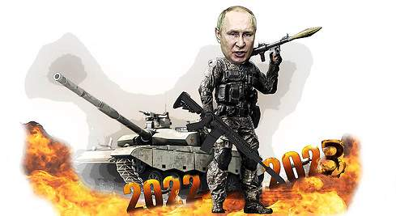

<ion-header [translucent]="true">
  <ion-toolbar>
    <ion-title >
      Ucrania vs Russia
    </ion-title>
  </ion-toolbar>
</ion-header>

<ion-content [fullscreen]="true" class="ion-padding">

    <!-- fab placed to the (vertical) center and end -->
    <ion-fab vertical="center" horizontal="end" slot="fixed">
      <ion-fab-button routerLink="../add-actions">
        <ion-icon name="add"></ion-icon>
      </ion-fab-button>
    </ion-fab>

    <p>
      PUtin, gobernador de Russia que quiere acabar con el planeta en unos segundos...
      
    </p>

</ion-content>

<!-- <ion-footer>
  <ion-toolbar color="primary">
    <ion-button fill="clear" expand="full" color="light">
      <ion-icon slot="start">

      </ion-icon>
    </ion-button>
  </ion-toolbar>
</ion-footer> -->

